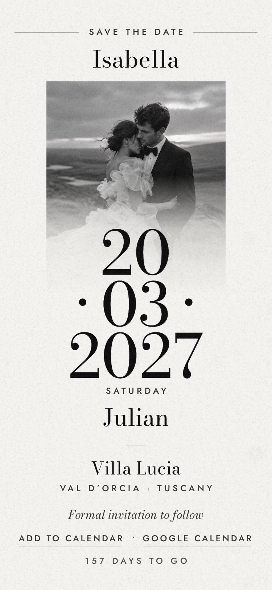
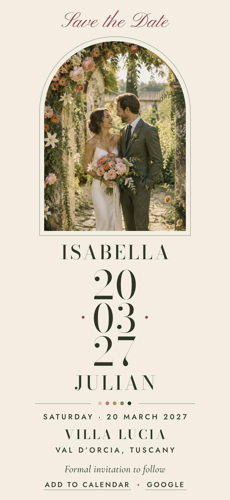

Isabella & Julian · 20 March 2027
Save the Date
Two designs, each a single screen on a phone or a laptop. Open one to see it the way your guests will, intro first.

Black & White A projector beam and silver dust form the date, then the print develops. Open
Floral Petals blow in, gather around the names, then open onto the garden arch. OpenEach intro runs about six seconds. Tap anywhere to skip it.